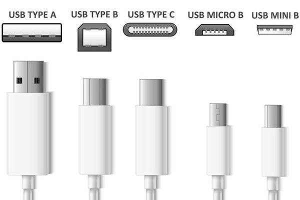
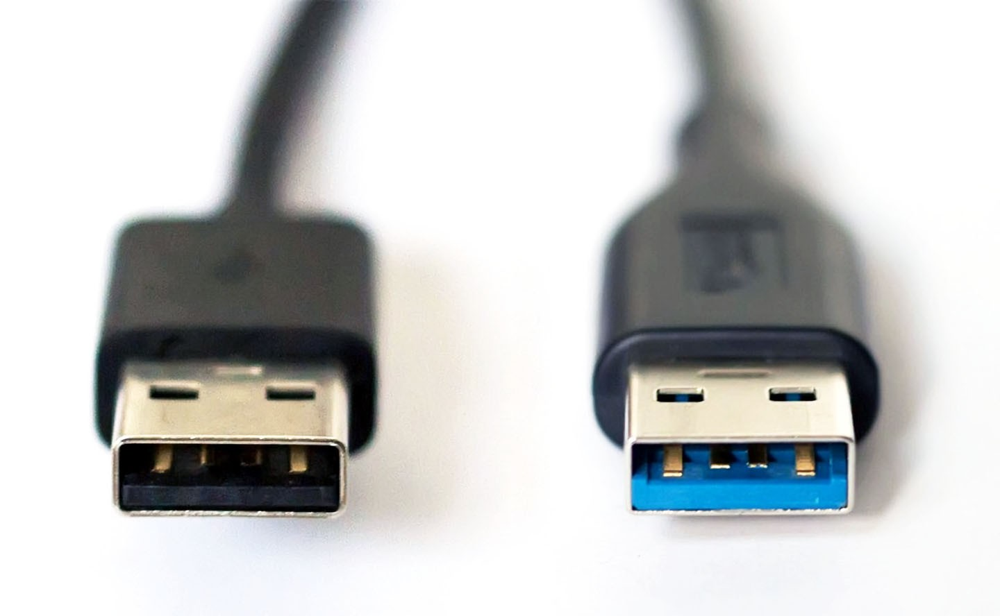

L’USB a été conçu au milieu des années 1990 afin de remplacer les
nombreux ports externes d’ordinateurs (port parallèle, port série,
port SCSI, etc.), spécialisés (ports clavier PC DIN, puis PS/2
mini-DIN, port souris) et incompatibles les uns avec les autres.
Voir une vidéo d'explications


En savoir plus